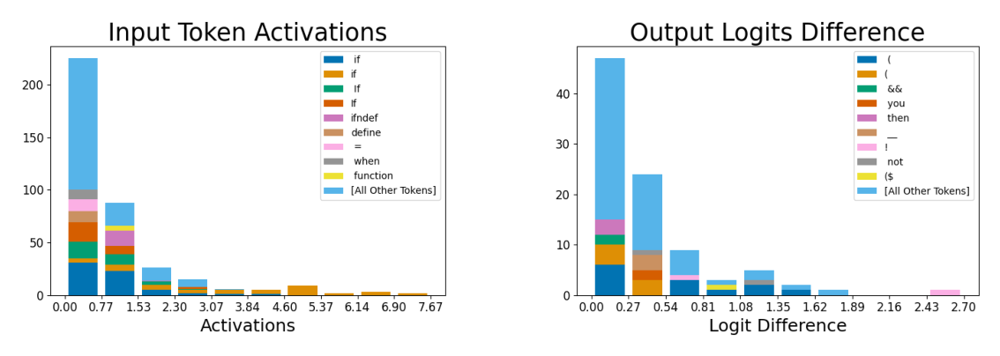

'If'-in-code feature: input and output histograms

Reading the input/output histograms
The two panels use the same construction as the main-text apostrophe-feature figure. Left: for every token occurrence where this Dictionary feature activates at all, bin the activation strength (x-axis) and stack the resulting counts by which specific token produced them, with '[All Other Tokens]' catching everything not individually labeled. Right: after ablating the feature, bin the resulting drop in each downstream token's predicted logit (x-axis, 'Logit Difference') and again stack by which specific next-token prediction was suppressed. The two panels are built from different quantities on different samples — activation strength versus a causal logit change — so their bar heights are not comparable to each other; what carries the interpretation is which tokens appear in each panel's legend, not the raw counts.
What the histograms show
The input panel's labeled tokens are several tokenizations of 'if' (capitalized, uncapitalized, with and without a leading space) together with 'ifndef', 'define', '=', 'when', and 'function' — code-specific tokens, consistent with a feature tied to the word 'if' inside source code rather than prose. The output panel's most-suppressed tokens after ablation are '(', '&&', 'then', '!', '__', and similar — tokens that typically follow 'if' in code syntax (an opening parenthesis for the condition, a logical AND, a negation, a dunder identifier). The two lists tell a consistent causal story: what triggers the feature and what the model does with it line up.
Where this fits
This is one of the additional Dictionary feature case studies in Appendix D.2, alongside a similar 'Dis'-prefix feature and two more apostrophe-context features, extending the paper's Monosemanticity argument beyond the single worked example in the main text (sparse-autoencoders, §"D.2 EXAMPLES OF LEARNED FEATURES", p. 17).